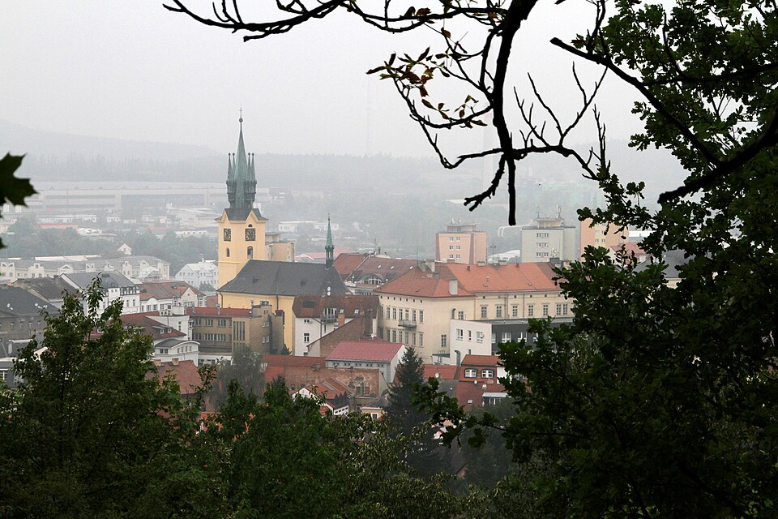
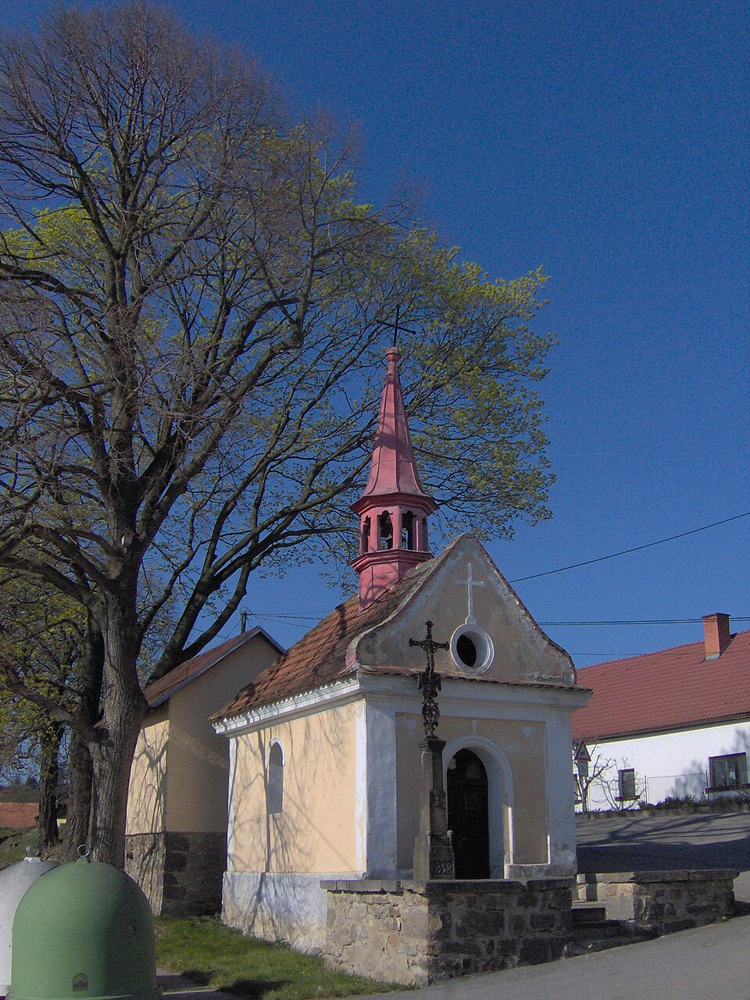
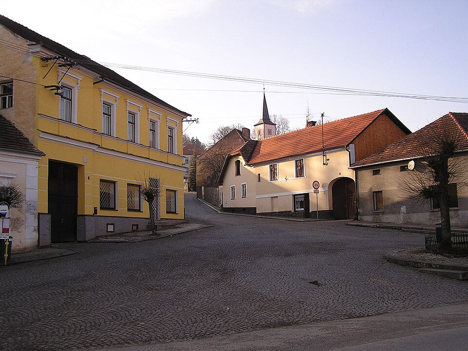
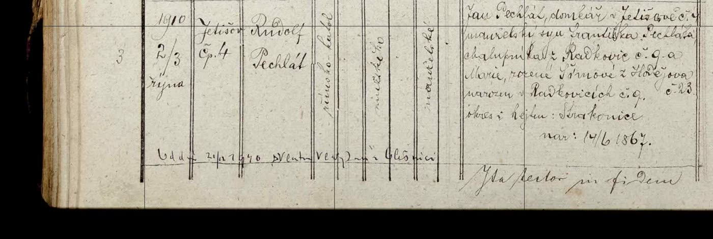
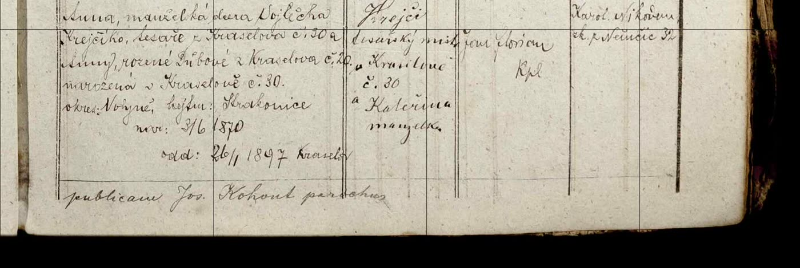
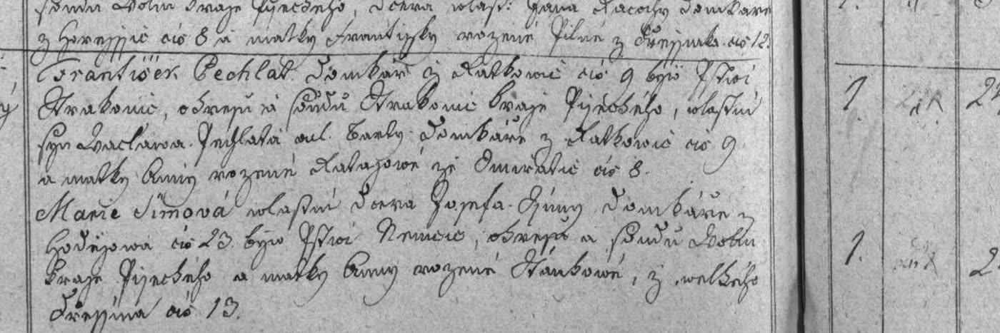
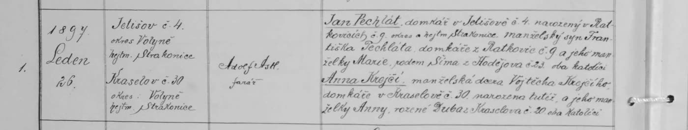
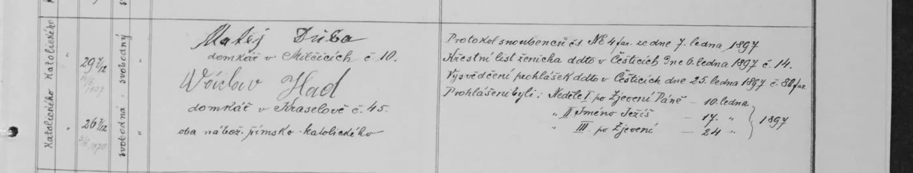

Předci z tatínkovy strany. Údaje pocházejí z digitalizovaných matrik Státního oblastního archivu v Třeboni a z rodinného rodokmenu v MyHeritage. U ověřených zápisů je odkaz na snímek matriky, jeho výřez a přepis. Údaje o žijících lidech uvádím jen v nezbytné míře. Maminčina větev je na webu Rod Krejsů ze Šumavských Hoštic.
Co je nového (28. 10. 2026)
Mapa míst a nový název: rod pochází z Radkovic u Čestic (okres Strakonice) – Kde rod žil.
Doplněna moderní rodina: diagram všech sedmi větví potomků Rudolfa a Vlasty po generacích (sourozenci táty Jiřího, jejich děti, vnoučata a pravnoučata) – Potomci.
O dvě generace dál: svatba prapradědy Františka Pechláta s Marií Šímovou (12. 11. 1861, Hodějov). Rod sahá v Radkovicích čp. 9 k Václavovi (1808–1865) a Bartolomějovi († 1832). Všichni Pechláti z farnosti Čestice v letech 1749–1877 pocházeli z Radkovic (čp. 9 a 10).
Nalezen křest dědy Rudolfa: narodil se 2. 10. 1910 v Jetišově čp. 4 (fara Čestice), ne v Příbrami, kde později žil.
Sourozenci: Rudolf byl nejmladší z šesti dětí – před ním se narodili František (1899), Anna (1902), nedonošený syn bez jména (1904), Josef (1905) a Jan (1907, zemřel ve dvou měsících).
O generaci dál: jeho otec Jan Pechlát (* 14. 6. 1867 v Radkovicích čp. 9) byl syn Františka Pechláta a Marie roz. Šímové z Hodějova; matka Anna (* 3. 6. 1870 v Kraselově čp. 30) byla dcera tesaře Vojtěcha Krejčího a Anny roz. Dubové. Jan a Anna se vzali 26. 1. 1897 v Kraselově.
Nalezena svatba pradědy Jana a Anny (26. 1. 1897, Kraselov): potvrzuje rodiče obou. Janův vlastní křest (Radkovice 1867) archiv zpřístupní online až po roce 2034.
Rodokmen
ověřeno v matricez rodinného rodokmenu (MyHeritage)
Mariedcera sedláka Jakuba L…(?) a Doroty z [Němčic?] čp. 3
rodiče Františka Pechláta
Václav Pechlát*9. 5. 1808, Radkovice čp. 9†28. 11. 1865, Radkovice čp. 9⌂domkář, později chalupník
Anna*asi 1808, z čp. 8 (příjmení a ves nejisté)†20. 12. 1876, Radkovice čp. 9
Sourozenci Václava: Anna (1805) a další. Děti Václava a Anny (Radkovice čp. 9): František (1837), Václav (1839), Jan (1842–1860), Marie (1845–1860), Anna (1847–1850), Tomáš (1850–1852).
∞ 12. 11. 1861, Hodějov · rodiče Jana Pechláta
František Pechlát*10. 1. 1837, Radkovice čp. 9⌂domkář/chalupník, Radkovice čp. 9
Marie Šímová*asi 1837, Hodějov čp. 23dcera domkáře Josefa Šímy
rodiče Anny Krejčí
Vojtěch Krejčí⌂tesař, Kraselov čp. 30
Anna Dubová⌂z Kraselova čp. 20 (příjmení Dubová/Důbová – čtení nejisté)
Děti Františka a Marie (Radkovice čp. 9): Jan (1867), dvojčata Vojtěch a Marie (1870, oba zemřeli jako kojenci), František (1871), Marie (1874–1878), Anna (1876–1877).
∞ 26. 1. 1897, Kraselov
Jan Pechlát*14. 6. 1867, Radkovice čp. 9⌂domkář, Jetišov čp. 4
Anna Krejčí*3. 6. 1870, Kraselov čp. 30
rodiče Vlasty Vladykové
Jan Vladyka*25. 4. 1877†asi 1948
Kateřina Tošnerová*6. 1. 1881†8. 8. 1952
∞ 21. 12. 1940 (přípis v matrice, čtení místa nejisté)
Rudolf Pechlát*2. 10. 1910, Jetišov čp. 4†3. 7. 1962 (MyHeritage)⌂Příbram
Vlasta Vladyková*24. 6. 1920†31. 3. 1996? (MyHeritage, poslední číslice nečitelná)⌂Příbram
Rudolfovi sourozenci (všichni narozeni v Jetišově čp. 4, ověřeno v matrice): František (* 6. 10. 1899, † 16. 8. 1965; sňatek 1927 v Kraselově), Anna (* 23. 7. 1902, † 4. 9. 1950 v Doubravici; provdaná 1926 za Václava Pavlíka), nedonošený syn bez jména (24. 2. 1904), Josef (* 4. 3. 1905), Jan (* 26. 6. 1907, † 25. 8. 1907). Rudolf (1910) byl nejmladší.
děti Rudolfa a Vlasty (sourozenci táty Jiřího) – celé větve níže
Rod pochází z Radkovic u Čestic (dnes část obce Úlehle, okres Strakonice, Jihočeský kraj) – ne z Radkovic na Plzeňsku. Radkovice, Hodějov, Kraselov a Jetišov leží v okruhu asi 5 km; Rudolf pak odešel do Příbrami. Čára ukazuje stěhování rodu, barva dobu, číslo pořadí. Na značku se dá kliknout.
18. a 1. pol. 19. století2. pol. 19. století20. stoletíokolí, souvislosti
Jetišov čp. 4 – Domek Jana a Anny Pechlátových Foto: Nissan0, CC BY-SA 3.0, Wikimedia Commons

Příbram – Rudolf a Vlasta Pechlátovi a jejich sedm dětí (podle rodiny). Foto: Gerd Eichmann, CC BY 4.0, Wikimedia Commons

Úlehle čp. 4 – Šípkovi – Anna, žena Jakuba Pechláta z Radkovic čp. 10. Foto: User:Japo, Public domain, Wikimedia Commons

Čestice – fara – Farní kostel Foto: JAn Dudík, Public domain, Wikimedia Commons
Fotografie ukazují obce dnes; konkrétní domy rodiny na Wikimedia Commons nejsou – u každého místa v mapě je odkaz na pohled z ulice. Čísla popisná se od 18.–19. století mohla změnit.
Potomci Rudolfa a Vlasty
Podle rodinného rodokmenu v MyHeritage. Každá ze sedmi větví má vlastní diagram; řádky odpovídají generacím: děti Rudolfa a Vlasty → vnoučata (např. Přemysl a Vít) → pravnoučata → prapravnoučata. U žijících uvádím jen rok narození; „?“ = na fotce listu špatně čitelné. Na telefonu lze diagram posouvat do strany.
∞ 1940
Rudolf Pechlát1910–1962
Vlasta Vladyková1920–1996?
Ing. Rudolf ml. (1942)
Ing. Rudolf ml.1942∞ Alena roz. Kopecká (1947–2010)
Jan ml.1968?∞ Drahuše?∞ Pavla roz. Guziorová?přiřazení dětí k matkám nejisté
Lukáš∞ Kamila
dcera2018?
Jakub1995?∞ Nikola Mrkvicová
Magda2021
Matěj2022
Adéla2003
Jana Hospodková, Benešová1969?∞ Miroslav Hospodka∞ Martin Beneš (†2014?)
Viktorie Hospodková
Veronika Benešová2007?
Martin Beneš2009?
Natálie Benešová2014?
Aurelie Peterková (1947)
Aurelie Peterková1947∞ Miroslav Peterka st. (1944)
Miroslav ml.1969∞ Lenka roz. Kuteničová? (1970)
Tadeáš1998
Matouš2003
Aurelie Stiborová1972∞ Jiří Stibor (1968)
Vlastimil Peterka2000
Veronika Stiborová2002
Markéta2006
Vlastimil (1949?)
Vlastimil1949?∞ Zdenka roz. Rejholcoválist je na fotce rozmazaný
Zdenka Havelková∞ Ing. Petr Havelka
Matěj? Havelka
Ema Havelková
Zuzana Fuitková1973?∞ Milan Fuitík
Mgr. Lucie Valečková1991?∞ Ing. Martin Valeček
Natálie2021
Ondřej2022
Ctibor st. (1951)
Ctibor st.1951∞ Dana roz. Vítová (1957)
Lenka Nápravníková1976∞ Roman Nápravník (1972)
Adam2006
Ondra2010
Ctibor ml.1980∞ Petra roz. Čabáková
Evelína2005
Matěj2007
Vavřinec2010
Jana Šeberková1992∞ Jan Šeberka
Vít Šeberka2019
Josef Šeberka2021
Jakub1997∞ Dominika Schmidtová
Ing. Jiří (1954)
Ing. Jiří1954∞ Ing. Helena roz. Krejsová (1954)
Mgr. Přemysl1978∞ Ing. Jana roz. Česneková (1977)
Ela2014
Adam2016
Ing. Vít, MBA1984∞ Mgr. Tereza roz. Suntychová (1993)
Vincent2023
Martina Kubátová (1955)
Martina Kubátová1955∞ Zdeněk Kubát (1952)
Martin Kubát1976∞ Martina roz. Babická? (1976)∞ Veronika roz. Roubíčková (1976)přiřazení dětí k matkám nejisté
Nikola Kubátová1996
Matyáš2023
Daniel Kubát1999
Samuel Kubát2010
Kristián Kubát2016
Zdeněk Kubát ml.1978∞ Vlasta Mlíjnovská? (1978)
Eliška Kubátová2008
Šimon Kubát2013
Osoby a zápisy
Rudolf Pechlát
ověřeno
Křest
narozen 2. 10. 1910, pokřtěn 3. 10. 1910, Jetišov čp. 4; matrika N Jetišov 1840–1923, fara Čestice (snímek 65). Křtil kaplan Jan Florian, porodní bába Karolína Nikodemová z Němčic.
Otec
Jan Pechlát, domkář v Jetišově čp. 4, manž. syn Františka Pechláta, chalupníka z Radkovic čp. 9, a Marie rozené Šímové z Hodějova čp. 23; narozen v Radkovicích čp. 9, okres a hejtmanství Strakonice, 14. 6. 1867.
Matka
Anna, dcera Vojtěcha Krejčího, tesaře z Kraselova čp. 30, a Anny rozené Dubové z Kraselova čp. 20; narozena v Kraselově čp. 30, okres Volyně, 3. 6. 1870. Sňatek rodičů 26. 1. 1897 v Kraselově.
Kmotři
František Krejčí, tesařský mistr v Kraselově čp. 30, a Kateřina, manželka.
Přípis
„Odd. 21/12 1940 s Vlastou Vla…ovou v Ol…ici“ – sňatek s Vlastou Vladykovou; místo zatím nečitelné.


Matrika narozených Jetišov, 1910, č. 3 – SOA Třeboň.
František Pechlát, domkář z Radkovic čp. 9, 24 let, svobodný; vlastní syn Václava Pechláta, domkáře z Radkovic čp. 9, a Anny rozené [příjmení nejisté] z [ves nejistá] čp. 8. Křest 10. 1. 1837 v Radkovicích čp. 9 (2953/383).
Nevěsta
Marie Šímová, 24 let, svobodná; vlastní dcera Josefa Šímy, domkáře z Hodějova čp. 23, a Anny rozené [Hankové?] z Velkého [ves nejistá] čp. 13.

Matrika oddaných Kraselov, oddíl Hodějov, 1861 – SOA Třeboň.
Všichni Pechláti z farnosti Čestice
z rejstříků a matrik
V rejstřících farnosti Čestice za roky 1749–1877 se Pechláti vyskytují jen v Radkovicích, ve dvou sousedních usedlostech:
čp. 9 – naše linie: Bartoloměj Pechlát († 1832) → Václav (1808–1865) → František (1837) → Jan (1867) → Rudolf (1910).
čp. 10 – příbuzná větev: Jakub Pechlát, sedlák (asi 1771–1846) × Anna, dcera Václava Šípka z Úlehle čp. 4 (asi 1776–1861); jejich děti mj. Josef (1799), dvojčata Tomáš a Marie (1810), Antonín (1813). Později v čp. 10 Jan Pechlát, podruh, a Josef Pechlát × Marie Formanová(?).
Nejstarší zápisy (1763–1799) – Tomáš, Anna, Magdalena, Kateřina, Barbora, Jakub, Dorota, Bartoloměj (1778), Kateřina, Josef – jsou v rejstříku bez čísla domu; jejich vazby na obě usedlosti ještě nejsou doložené.
Jak jsou obě usedlosti příbuzné, zatím nevíme. Vlastní křest pradědy Jana z roku 1867 (kniha Radkovice N 1840–1934) archiv zpřístupní online až po roce 2034; jeho rodiče i datum narození však potvrzují svatba z roku 1897 i Rudolfův křest.
Jan Pechlát, domkář v Jetišově čp. 4, narozený v Radkovicích čp. 9 (okres a hejtmanství Strakonice), manželský syn Františka Pechláta, domkáře z Radkovic čp. 9, a jeho manželky Marie roz. Šímové z Hodějova čp. 23; katolík, svobodný, 29 7/12 roku (nar. 14. 6. 1867). Křestní list vydán v Česticích 6. 1. 1897.
Nevěsta
Anna Krejčí, manželská dcera Vojtěcha Krejčího, domkáře v Kraselově čp. 30, a jeho manželky Anny roz. Dubové z Kraselova čp. 20; narozena tamtéž, svobodná, 26 7/12 roku (nar. 3. 6. 1870).
Svědci
Matěj Drůža(?), domkář v Milčicích čp. 10, a Václav Had, domkář v Kraselově čp. 45.
Ohlášky
10., 17. a 24. 1. 1897.


Matrika oddaných Kraselov, 1897, č. 1 – SOA Třeboň.
Deník hledání
28. 10. 2026: v Příbrami (matrika narozených 1909–1913 a rejstřík farnosti 1896–1910, SOA Praha) Rudolf zapsaný není. Podle rodiny se narodil v Jetišově u Strakonic – tam nalezen (fara Čestice). Nalezena i svatba jeho rodičů v Kraselově 1897.
28. 10. 2026: prošli jsme s Codexem všechny tři rejstříky fary Čestice (1749–1877) a úmrtní matriku Radkovic 1815–1880; nalezena svatba Františka × Marie Šímové 1861 a Františkův křest 1837. Prošel jsem matriku narozených Jetišova 1894–1920 – Rudolfovi sourozenci.